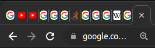
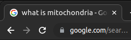

Problem
We google hundreds of questions everyday.
For each question, we open a new tab.

Solution
When you press ?, this extension(CLEAR TAB) essentially CLEARs it.

Press ? to clear a tab.
We google hundreds of questions everyday.
For each question, we open a new tab.
We end up opening too many tabs
How can we prevent this?
When you press ?, this extension(CLEAR TAB) essentially CLEARs it.
We end up using the same tab for every question! Problem solved!
Try it now! Go to a tab and press ?. You'll be able to clear the tab.